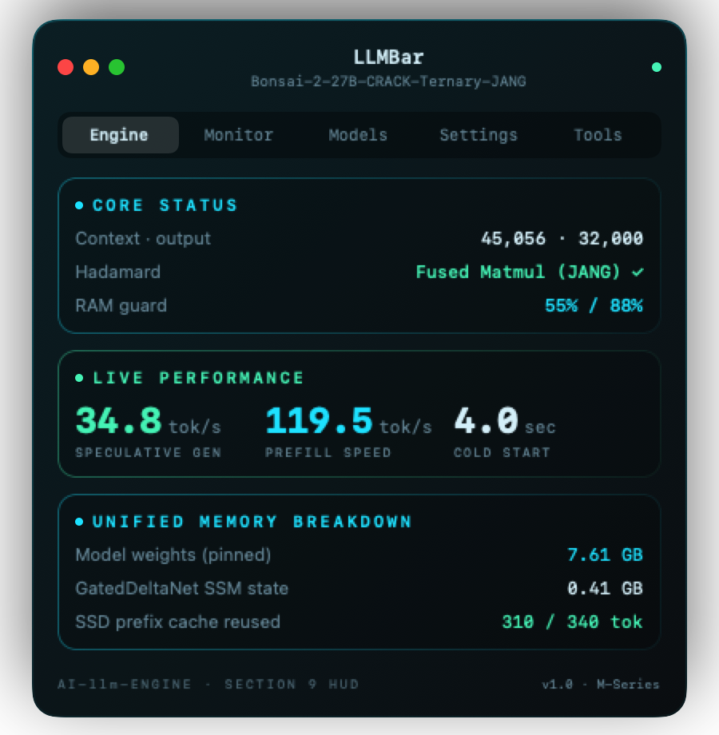
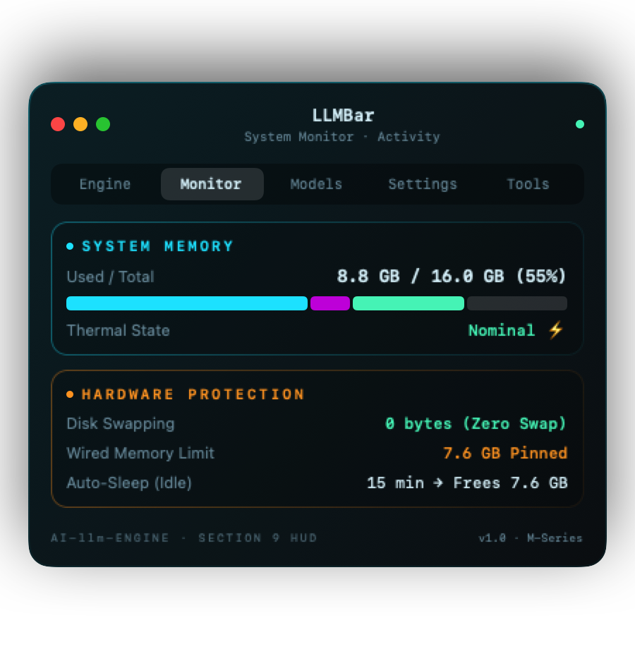
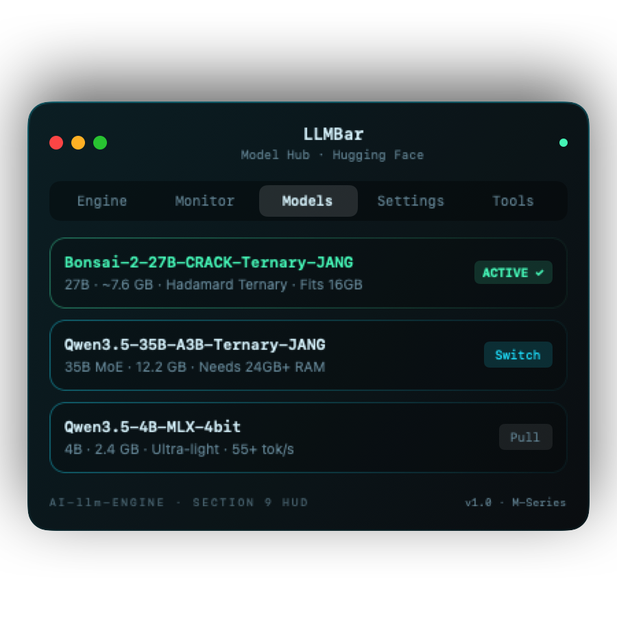

Extreme intelligence.
Minus the overhead.
A dependency-light MLX inference engine with Hadamard ternary quantization, prompt-lookup speculative decoding, and a native menu bar companion. Run 27B parameters on a fanless 16 GB MacBook Air at up to 35 tokens per second.
git clone https://github.com/dsavenk0/AI-llm-Engine.git && cd AI-llm-Engine && ./llm setup
A precision instrument in your menu bar.
Built entirely in Swift with zero third-party dependencies. Telemetry, RAM protection, model switching, and local OpenAI API orchestration — right under your notch.
Prompt-Lookup Speculative Decoding
When code edits repeat context, the engine drafts 15-gram continuations and verifies them in a single weight pass. Identical greedy output, 2.5× the speed.
# Click "Run Speculation Test" to stream tokens with speculative n-gram verification.
def fused_hadamard_gemm(x, weights, signs):
"""Single transform per shared input width with exact verification."""
h = apply_hadamard_transform(x, signs)
return mx.quantized_matmul(h, weights)| Component | Allocation | Policy | Behavior Under Pressure |
|---|---|---|---|
| Model Weights | 7.61 GB |
Wired Pinned | macOS is barred from swapping or compressing weights. |
| GatedDeltaNet State | 0.41 GB |
Snapshotted | Snapshots state at generation start; rolls back recurrence. |
| Prefill Chunking | Dynamic |
Adaptive | Shrinks chunk size (1024 → 256 → 128) if memory ceiling is reached. |
| RAM Ceiling Guard | 88% Threshold |
Protected | Rejects oversized requests with a clean error; zero system freezes. |
def verify_draft_batch(engine, drafts):
accepted = engine.step_verify(drafts)
return accepted
Seamless OpenAI API Compatibility
AI-llm-Engine serves on http://127.0.0.1:8000/v1. Drop-in ready for Continue, Kilo Code, OpenCode, Claude Code, and Cursor with automatic max_tokens clamping.
Add to ~/.continue/config.json:
{
"models": [{
"title": "Bonsai 27B",
"provider": "openai",
"model": "bonsai-27b",
"apiBase": "http://127.0.0.1:8000/v1",
"apiKey": "none"
}]
}No HTTP 413 errors on oversized token requests:
Base URL: http://127.0.0.1:8000/v1
Model: default
Max Tokens: 32,000 (auto-clamped)
Streaming: EnabledBuilt for macOS. Inside and out.
High-resolution captures of LLMBar running on macOS Sonoma & Sequoia. Cyberpunk HUD styling, real-time memory telemetry, and instant model orchestration.

Core Telemetry & Throughput
Live decode speed (34.8 tok/s), prefill rate (119.5 tok/s), unified memory guard, and single-pass Hadamard verification.

Hardware & Unified Memory Pressure
Detailed Activity Monitor breakdown (Weights, SSM, Process, Headroom), 0-byte swap guarantee, and nominal thermal tracking.

Hugging Face Model Manager
Search, pull, and switch models with 1 click. Immediate RAM suitability check and auto-engine restart.
Why it’s so fast on Apple Silicon.
Built from the ground up to take advantage of Apple Unified Memory Architecture and Metal compilation.
One Hadamard Transform per Shared Input
The bundle stores one sign vector per input width. Projections q|k|v, gate|up and qkv|z execute in a single fused quantized matmul rather than repeating transforms per layer.
norm → Hadamard(signs) → fused_quantized_matmul
Prompt-Lookup Speculation
Drafts continuation n-grams during code edits and verifies up to 15 drafted tokens in one weight pass. Re-runs cheap recurrence on accepted tokens and shuts off on prose.
draft_ngrams(15) → single_pass_verify → 35 tok/s
Pinned Wired Weights
The wired memory limit keeps model weights resident in physical RAM. macOS is barred from compressing or swapping them to disk, eliminating system stutter.
wired_limit keeps 7.6 GB resident (0 B swapped)
Hybrid SSD Prefix Cache
GatedDeltaNet recurrence states and KV caches are snapshotted to NVMe SSD at prompt completion. Subsequent agent requests restore instantly without recomputing.
~/.cache/ai-llm-engine/prefix/ (8 GB LRU budget)
Adaptive RAM Guard
Computes safe context length dynamically. Caps prefill chunk sizes (1024 → 256 → 128) and enforces an 88% system memory ceiling so other apps run smoothly.
adaptive_chunking: 1024 → 256 → 128 under load
15-Minute Zero-Footprint Sleep
After 15 minutes of idle time, the engine unloads model weights and returns ~7.6 GB of unified memory back to macOS. Wakes up in 2 seconds on the next request.
idle_timeout(15m) → free(7.6 GB) → wake(2.0s)
Real numbers. No cherry-picking.
Benchmarked on a fanless MacBook Air M5 with 16 GB unified RAM running dealignai/Bonsai-2-27B-CRACK-Ternary-JANG (27B, ~7.6 GB). Alternating runs with identical prompts.
| Benchmark Metric | vMLX 1.6.75 | AI-llm-Engine | Performance Delta |
|---|---|---|---|
|
Decode Speed (256 tokens)
Pure autoregressive decoding
|
6.80 – 6.94 tok/s | 7.61 – 9.53 tok/s | +12% to +37% faster |
|
Code Edits (Speculative Decoding)
Prompt-lookup n-gram matches
|
— (Not supported) | 27 – 35 tok/s | 2.5× faster |
|
Prefill Speed (2.3K prompt)
Prompt ingestion rate
|
73.5 – 88.1 tok/s | 86.7 – 119.5 tok/s | +18% to +36% faster |
|
Cold Start to First Request
Load, compile & generate
|
19.0 s | 4.0 s | 4.7× faster |
|
Process Memory Overhead
RAM used above the weights
|
1.26 GB | 0.66 GB | 48% less RAM |
|
Install Footprint
Application / environment size
|
1.9 GB app bundle | 310 MB venv · 1.7 MB DMG | 6× smaller |
|
Large max_tokens (e.g. 32K)
Agent requests from Kilo / Continue
|
HTTP 413 Error | Clamped, succeeds ✓ | No crashes |
Choose your model. Match your Mac.
Pick your Mac’s unified memory configuration to see recommended models and expected throughput.
dealignai/Bonsai-2-27B-CRACK-Ternary-JANG
27B parameter hybrid dense/SSM model. Quantized with Hadamard rotation. Runs comfortably inside 7.6 GB RAM.
./llm pull dealignai/Bonsai-2-27B-CRACK-Ternary-JANG
Qwen3.5-35B-A3B-Ternary-JANG
MoE architecture with Hadamard ternary rotation. Highest reasoning capability for large-context programming agents.
./llm pull mlx-community/Qwen3.5-35B-A3B-Ternary-JANG
mlx-community/Qwen3.5-4B-MLX-4bit
Ultra-lightweight model ideal for quick chats, summary tasks, and 8 GB Macs. Loads in under one second.
./llm pull mlx-community/Qwen3.5-4B-MLX-4bit
Ready in minutes.
Download the native DMG installer or setup with the standalone CLI.
macOS Installer DMG
Drag-and-drop installer containing LLMBar.app, bundled CLI binaries, and menu bar daemon.
bf13451a4a90fa39eb6e18a9fe4b60f91bc44453a0ae50f53037663afb5806d2
Terminal & Python CLI
For developers who prefer direct terminal access, script automation, and isolated venvs.
Frequently Asked Questions
What makes AI-llm-Engine faster than Ollama or vMLX?
AI-llm-Engine applies Hadamard sign vectors once per shared input dimension rather than per projection, fusing them into Metal matmuls. In addition, prompt-lookup speculative decoding drafts n-grams to achieve 27–35 tok/s on code repetitions, and cold-start compile caches drop startup time from 19 seconds down to 4 seconds.
Can a 16 GB MacBook Air really run a 27-billion parameter model?
Yes. With Hadamard ternary quantization (JANG / Prism), the 27B weights require only ~7.6 GB of unified memory. Process overhead is capped at 0.66 GB, and the RAM Guard ceiling keeps total system memory under 88%, preventing macOS from swapping to disk or stuttering.
How do I connect this to Continue.dev or Cursor?
The engine runs a standard OpenAI-compatible HTTP server at http://127.0.0.1:8000/v1. In Continue.dev, configure provider as "openai" with model "default" and apiBase pointing to this address. Any OpenAI client works out of the box.
What are the macOS system requirements?
Any Mac with Apple Silicon (M1, M2, M3, M4, or M5) running macOS 14.0 (Sonoma) or macOS 15.0+ (Sequoia). Works with as little as 8 GB RAM (for 4B models) up to 16 GB, 24 GB, 36 GB, 64 GB, 128 GB+.
Run intelligence at the speed of silicon.
Download LLMBar.app today. 100% on-device, private, and open source under Apache 2.0.